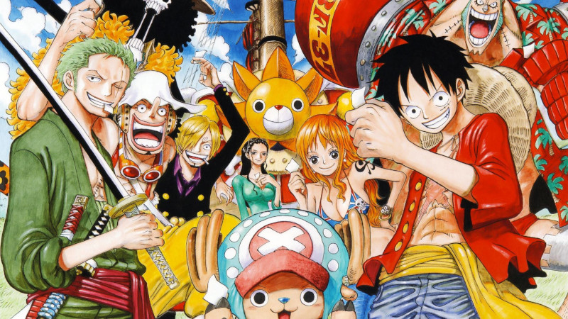

Saga de l'East Blue
Saga de l'East Blue
- Arc Romance Dawn
- Arc del Pirata Buggy
- Arc del Capità Kuro
- Arc del Restaurant Baratie
- Arc d'Arlong Park
- Arc de Loguetown
- Arc del Drac Mil·lenari
Saga d'Alabasta
- Arc de Reverse Mountain
- Arc de Whiskey Peak
- Arc de Little Garden
- Arc de Drum
- Arc d'Alabasta
Saga de Skypiea
- Arc de les Illes de les Cabres
- Arc de Jaya
- Arc de Skypiea
- Arc del G-8
Saga de Water7
- Arc de Long Ring Long Land
- Arc del Somni Oceànic
- Arc de Foxy's Return
- Arc d'Aokiji
- Arc de Water7
- Arc d'Enies Lobby
- Arc del Retorn a Water7
Saga de Thriller Bark
- Arc de l'illa Florian
- Arc de l'illa Spa
Saga de Marineford
- Arc del Retorn a Sabaody
- Arc de l'Illa Gyojin
Saga de Dressrosa
- Arc de Punk Hazard
- Arc de Dressrosa
Saga de Whole Cake Island
- Arc de Zou
- Arc de l'Illa Whole Cake
Saga del País de Wano
- Arc del País de Wano-1
- Arc del País de Wano-2
- Arc de la Passatjada d'Uta
- Arc del País de Wano-3
Saga Final
- Arc d'Egghead
